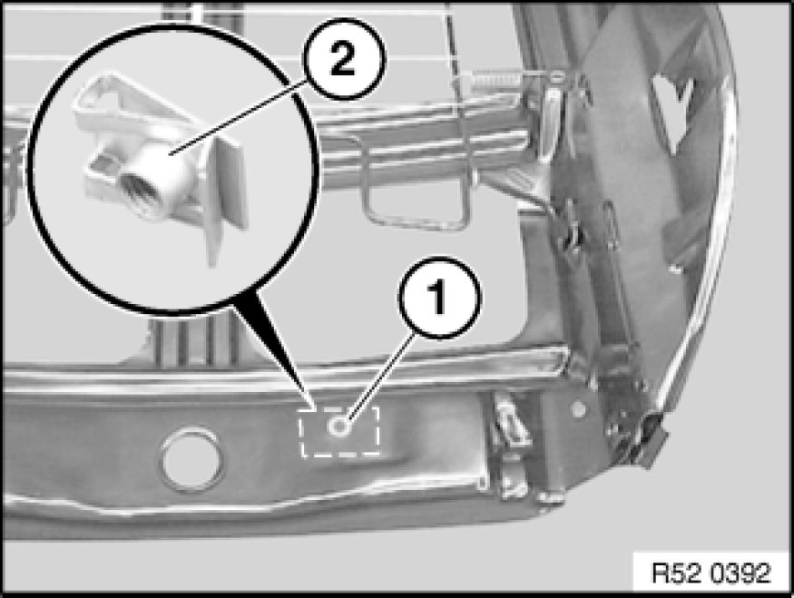

Removing and Installing/Replacing Backrest Frame on Left or Right Front Seat (Comfort)
52 17 030 - Removing and installing/replacing backrest frame on left or right front seat (comfort)

Remove backrest cover Replacing Backrest Cover for Left or Right Front Seat (Comfort) at bottom.
Caution!
Do not under any circumstances turn screw underneath screw (2), this would destroy the seat frame.
Press backrest cover (1) to one side and release screw (2) on left and right.
Detach backrest frame (3) with backrest cover upwards.
Installation:
Replace screws (2) (microencapsulation).
Tightening torque, refer to 52 10 2AZ [1][2]Seats.

End of partial operation:
Removing and installing backrest frame
Following operation:
Replacing backrest frame.
Completely remove backrest cover and padding Replacing Backrest Cover for Left or Right Front Seat (Comfort).
If necessary, remove lumbar cushion on front seat Replacing Lumbar Cushion on Left or Right Front Seat (Comfort).
If necessary, remove valve housing for front lumbar support. Removing and Installing/Replacing Valve Housing for Lumbar Cushion (Comfort Seat)
If necessary, remove drive unit for lumbar support Service and Repair.
If necessary, remove shaft for head restraint adjustment Removing and Installing/Replacing Shaft for Headrest Adjustment (Comfort Seat)
Remove drive unit for head restraint adjustment.
If necessary, remove gearing for head restraint adjustment Removing and Installing/Replacing Gearing for Head Restraint Adjustment (Comfort Seat).
If necessary, remove valve housing for lumbar support Removing and Installing/Replacing Valve Housing for Lumbar Cushion (Comfort Seat).
Unclip mount for rear panel (clip) towards rear from backrest frame.

If necessary, release screw (1) and remove metal nut (2).
If necessary, remove mat (1) from spring wire (2) of backrest frame (3).
Installation:
If necessary, suspend mat (1) on uppermost spring wire (2) on backrest frame (3).

Lift out head restraint guides.